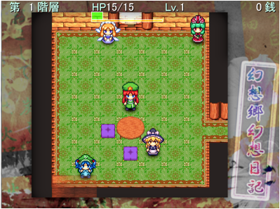
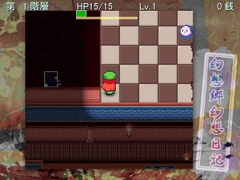
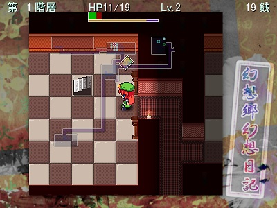
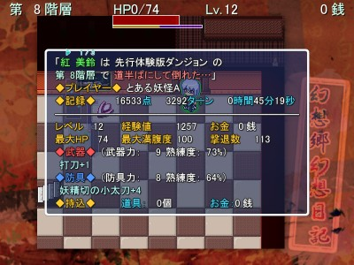

インストール・アンインストールCDからゲームのデータを任意の場所にコピーしてください。その後、コピーしたデータ内の「ggn(.exe)」を実行するとゲームが始まります。 ※CDから直接実行するとセーブができません！ アンインストールは、コピーしたゲームデータを削除するだけで完了となります。 タイトル画面何かボタンを押すと、タイトルメニューが表示されます。
|
 |
1.詰め所からダンジョンへ出発詰め所の出口に行き、行きたいダンジョンを選択します。初めてプレイする方は「チュートリアルダンジョン」がおすすめです。 お金や道具、厄ポイントを持ち帰った場合、それらを詰め所内で管理することもできます。 |
|
2.フロアを探索ダンジョン内には罠、道具が無造作にばらまかれ、どこかで見たことのある敵たちがうろついています。 道具を集め、敵を倒してレベルを上げましょう。 また、香霖がお店を開いていることもあります。
|
 |
|
 |
3.階段から次のフロアへ階段を見つけることで、次のフロアへ進むことができます。階段の上に立ち、「上る(下りる)」を選択することで次のフロアへ進むことができます。 |
|
4.クリアとゲームオーバー一定階層まで進むとクリア、ゴールに辿り着く前にHPがなくなってしまうとゲームオーバーとなります。 いずれの場合も、リザルトが表示されたあと詰め所に戻り、 レベルと能力値がリセットされます。 持っている道具とお金は、クリア時のみ詰め所に持ち帰ることができます。 |
 |
| 【アクション操作】 | 【キーボード】 | 【ゲームパッド】 | 【メニューでの役割】 |
| 移動 | カーソルキー | 十字ボタン | 選択・ページ切替 |
| 攻撃・素振り | Z | ボタン1 | 項目の決定 |
| ダッシュ | X | ボタン2 | キャンセル |
| 方向転換 | C | ボタン3 | キャンセル |
| メニュー | A, V, Enter | ボタン4 | 決定 |
| 斜め固定 | Shift | ボタン5 | ソート・マーク |
| 装備弾幕を撃つ | S | ボタン6 | - |
| マップ表示 | スペース | ボタン7 | - |
| スマートダッシュ | D | ボタン8 | - |
| 【ダッシュ】と【方向転換】のキー/ボタンを同時押し | |||
| 足踏み | 【攻撃】と【ダッシュ】のキー/ボタンを同時押し | - | |
アクション操作
特殊操作
ゲームを中断するには
|